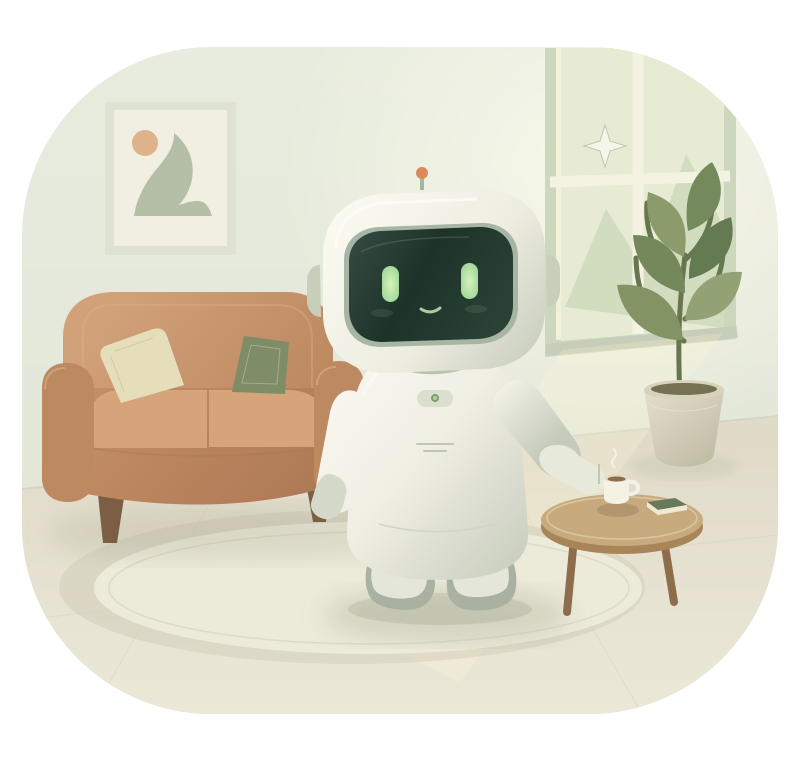
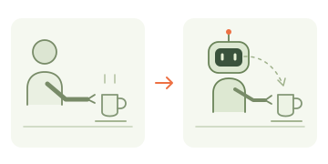
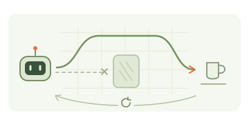
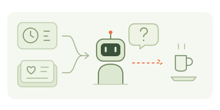

01
Embodied by design
Design the harness and models around perception, reasoning, and action in physical environments.
EMBODIED-NATIVEOpen-source embodied agents for real homes.
An open-source embodied Agent project for real homes, built together with developers.

Design the harness and models around perception, reasoning, and action in physical environments.
EMBODIED-NATIVEMake the system understandable and extensible. Invite developers to adapt it to different robots and explore real household scenarios.
OPEN COLLABORATIONUse changes in the home and feedback from interactions to explore long-term learning and adaptation.
LEARN FROM REAL HOMESA harness, models, and memory work together to connect perception, reasoning, and action in real homes.
Act in the environment. Bring new observations and experiences into the next interaction.
Organize real-time execution through a minimal core and plugins, connecting models, memory, and the robot.
Connect high-level understanding and decisions in RoboBrain with action generation and closed-loop execution in RoboGAM.
Organize user profiles, world states, and robot experiences through UPM, WSM, and RAM to provide context across interactions.
Module documentation is being prepared. Start with the module overviews to explore the design.
Research and engineering directions we want to explore with the community. Bring questions, experiments, and ideas to test.

How can robots learn from people?
Explore how robots can learn new tasks from human demonstrations and adapt them to different homes.

How can experience improve execution?
Explore how execution feedback and past experience can inform better task strategies over time.

When should a robot offer help?
Explore how home state and long-term memory can inform when and how a robot should offer help.
These are open questions to investigate, discuss, and validate together.
Join the explorationStart with a question, an experiment, or a plugin. Explore embodied AI for the home with developers and researchers.
Visit GitHub organizationFollow code and project updates. Start with the harness, models, or memory—wherever your experience fits.
Bring household use cases, observations, and feedback to help discuss and test the design.
Explore plugins and robot integrations to connect the system to more devices and home environments.